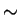
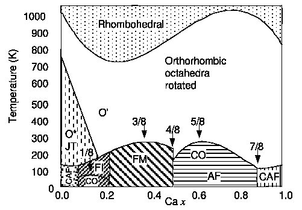

260 K) is observed. The 50% doping presents one particularly interesting case where the type CE charge ordering (CO) [113,114] is the stable ground state (discussed in more detail in Chapter 4). The highly doped La1-xCaxMnO3 (x > 0.5) shows various types of anti ferromagnetism. The end member CaMnO3 has a perfect cubic lattice structure and type G anti ferromagnetic (AF) structure where every Mn4+ is coupled anti ferromagnetically with its six neighboring Mn4+ ions [80]. There is no JT distortion in CaMnO3 because all octahedra are Mn4+O6 octahedra.|
 |
Other than changing doping or temperature, external pressure and isotope substitution also considerably modify the phase diagram. Most studies have focused on the effects on the resistivity and Curie temperature [116,117,106,118,119,120,121,122,123,124,125]. Interestingly, the electric resistivity drastically decreases and the TC increases with pressure, which is still not understood [99]. Within current understanding, increasing the pressure will reduce the lattice constants, thus bend more the Mn-O-Mn angle. The hopping amplitude t is reduced by bending the Mn-O-Mn angle. Therefore, we would expect the electric resistivity to increase with pressure. One suggestion by this author, though this remains to be verified, is that the pressure may modify the density of states near the Fermi surface as well. Isotope substitution of 16O with 18O results in change of the TC of 20 K, which is much larger than observed than in other oxides. These experimental findings clearly indicate the significant involvement of lattice phonons in the important CMR effect.